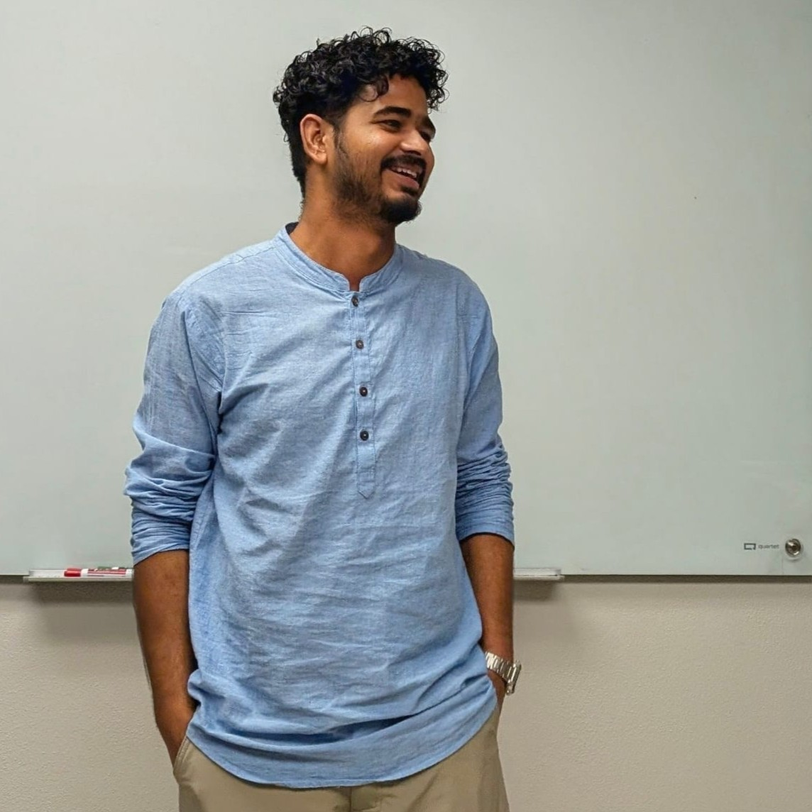

Nawal Kishor Hazarika
Hi! I am Nawal, a second-year Ph.D. student at Oklahoma State University, Stillwater. I completed my Integrated M.Sc. in Mathematics at Tezpur University. My research interests lie in Algebraic Geometry, and I am currently studying syzygies of projective varieties and how their geometric properties influence the structure of their resolutions.
I'm from Assam, located in the northeastern part of India. I enjoy listening to all sorts of music, especially classical, soft rock, jazz, blues, and folk. In my free time, I love playing chess and the guitar. I also enjoy taking nature photographs and coding from time to time.